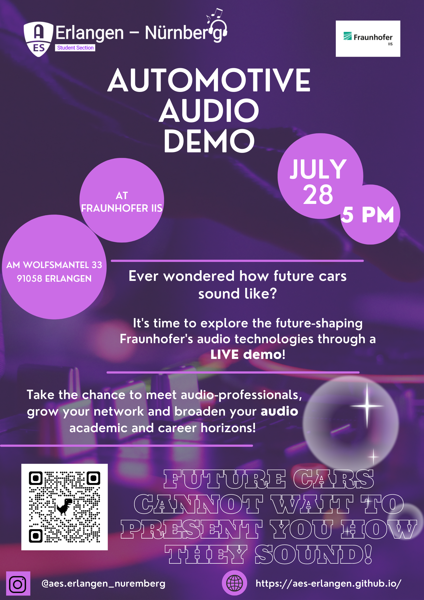

Spatial Car Audio Demo
In our everyday life we perceive noises from all direction: in nature it can be a bird whistling from a tree or an orchestra performing in a concert hall. Our goal is to bring spatial sound into the car to present passengers with a relaxed and natural sound environment - regardless the limitations of the vehicle cabin.
This is done • either by intelligent upmix algorithms that process a multichannel upmix out of a stereo input signal in real time • or through multichannel input content that is distributed according to the car geometry.
We invite the students of the AES Student Section Erlangen-Nürnberg to listen to three technologies in three demo vehicles.
Symphoria - Sonamic Panorama - MPEG-H Audio
In addition, we explain the HW and SW landscape used for our in-car technology demos. We are happy to answer questions about our team, how we work and what vacancies we can offer.
If you would like to participate in this event, please register here!
In our everyday life we perceive noises from all direction: in nature it can be a bird whistling from a tree or an orchestra performing in a concert hall. Our goal is to bring spatial sound into the car to present passengers with a relaxed and natural sound environment - regardless the limitations of the vehicle cabin.
This is done • either by intelligent upmix algorithms that process a multichannel upmix out of a stereo input signal in real time • or through multichannel input content that is distributed according to the car geometry.
We invite the students of the AES Student Section Erlangen-Nürnberg to listen to three technologies in three demo vehicles.
Symphoria - Sonamic Panorama - MPEG-H Audio
In addition, we explain the HW and SW landscape used for our in-car technology demos. We are happy to answer questions about our team, how we work and what vacancies we can offer.
If you would like to participate in this event, please register here!
Am Wolfsmantel 33, 91058 Erlangen